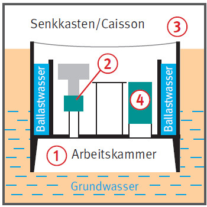

Arbeiten in Druckluft bedeuten
eine erhöhte Belastung des
menschlichen Körpers. Hierdurch
kann es zu Gesundheitsschäden
kommen.
Allgemeines
Begriffe, Definitionen
Arbeiten in Druckluft werden in umschlossenen Räumen, der sogenannten Arbeitskammer , ausgeführt. Die Arbeitskammer ist durch Personen- und Materialschleusen gegenüber dem atmosphärischen Bereich abgeschottet.
Druckluftbedingungen in der Arbeitskammer liegen vor bei einem Luftüberdruck von mehr als 0,1 bar gegenüber dem atmosphärischen Luftdruck (1 bar = 10 m Wassersäule).
Anwendungsbereiche
Tunnelbau, Schachtbau, Gründungen, Absenkung von Caissons im Einflussbereich von Grundwasser.
Druckluft dient zur Verdrängung von Wasser, um im Schutz des Luftdruckpolsters Tiefbauarbeiten durchzuführen.
Barotrauma
Bei gestörtem Druckausgleich im Kopf der Beschäftigten können beim Ein- und Ausschleusen
Ohrenschmerzen,
Trommelfellriss,
Blutungen im Ohr und in den Nasennebenhöhlen auftreten.
Beschwerden lassen sich vermeiden durch
langsamen Druckanstieg in der Schleuse,
Druckausgleich durch häufiges Schlucken bzw. vorsichtiges Ausatmen gegen die zugehaltene Nase.
Bei Erkältungen nicht einschleusen.
Stickstoffnarkose
Kann während der Arbeiten in Druckluft auftreten.
Ab 3,0 bar Überdruck wirkt der erhöhte Stickstoffanteil in der Luft narkotisch (Tiefenrausch).
Aufenthaltszeiten nach Druckluftverordnung beachten.
Sauerstofftoxizität
Bei Partialdrücken von 1,6 bar und mehr können Vergiftungserscheinungen des zentralen Nervensystems auftreten.
Mit Sauerstoffatmung erst beginnen, wenn der Überdruck in der Schleuse auf 1,0 bar abgesenkt ist.
Dekompressionskrankheit
Im Überdruck wird vermehrt
Stickstoff im Körper eingelagert (erhöhter Stickstoffpartialdruck).
Bei zu schnellem Ausschleusen
(Drucksenkung) gelangt Stickstoff
gasförmig ins Blut und führt
zu Dekompressionskrankheiten unterschiedlichster
Schwere, z. B.:
juckende Hautrötungen,
Gelenk-/Muskelschmerzen,
Lähmungen bis hin zu Infarkten
in Herz, Lunge und Niere.
Deshalb sind die Ausschleusungszeiten
genau zu beachten.
Gefahrstoffe in der Atemluft
Die Wirkung von Gefahrstoffen unter Überdruck ist nicht erforscht.
Generell gilt ein absolutes Minimierungsgebot.
Arbeitsplatzgrenzwerte (AGW) nicht anwendbar.
Ausbläser
Ausbläser sind ein plötzliches Entweichen von Druckluft aus der Arbeitskammer. Folgen davon können sein:
Wassereinbruch/Verbruch,
Dekompressionskrankheit.
Notfall- und Abdichtungsmaßnahmen vorsehen, die Luftverluste verhindern:
Versiegeln mittels Spritzbeton,
Abdichten mittels Folie und Holzwolle.

Anzeige
Arbeiten in Druckluft sind spätestens 2 Wochen vor Beginn der zuständigen Behörde anzuzeigen.
Schutzmaßnahmen
Brand
Erhöhter Sauerstoffpartialdruck in der unter Überdruck stehenden Arbeitskammer führt zu:
niederer Zündtemperatur,
höherer Brandgeschwindigkeit,
größerer Hitzeentwicklung.
Brennbare Materialien nur in der unbedingt notwendigen Menge in der Arbeitskammer vorhalten.
Schwerentflammbare Kleidung
verwenden.
Brandschutz-, Flucht- und Rettungsplan aufstellen.
Regelmäßige Übungen durchführen.
Für Überdruck geeignete
Feuerlöscher vorhalten.
Atemschutz für Flucht und Selbstrettung bereitstellen.
Arbeitszeit
Max. 8 h/Tag und 40 h/Woche.
12 Stunden Freizeit zwischen
den Schichten.
Nach 4 Stunden Arbeitszeit,
0,5 Stunden Pause einhalten.
Maximale Aufenthaltszeiten in
Druckluft siehe Ausschleusungstabellen, z. B.:
bei 1,5 bar Überdruck: 6,00 h,
bei 2,0 bar Überdruck: 4,45 h,
bei 3,6 bar Überdruck: 2,00 h.
Personaleinsatz
In Druckluft dürfen Arbeitnehmer
nicht beschäftigt werden:
bei mehr als 3,6 bar Überdruck,
unter 18 oder über 50 Jahre,
Ausnahmen auf Antrag möglich.
Druckluftbaustellen müssen
von einem fachkundigen Bauleiter
mit Befähigungsschein nach DruckluftV geleitet werden,
von einem ermächtigten
Druckluftarzt betreut werden.
Ab 2,0 bar Überdruck muss der
Druckluftarzt ständig auf der Baustelle anwesend sein.
Sachkundiger für Druckleitungsnetz, Schleusen und Kammern,
Sachkundiger für elektrische Anlagen,
Schleusenwärter,
Ersthelfer,
Brandschutzhelfer.
Aufgaben des Schleusenwärters
Der Schleusenwärter
kontrolliert die Eignung der
Beschäftigten vor dem Einschleusen,
führt den Schleusungsvorgang durch,
schreibt das Schleusenbuch,
überwacht das Wohlbefinden
der Beschäftigten,
überwacht den Sauerstoffgehalt in der Schleuse,
kontrolliert die vorhandenen
Sicherheitseinrichtungen.
Besonderheiten beim Schleusen
Wird mehr als 50 % der maximalen Aufenthaltszeit in Überdruck verbracht, ist nur eine Schleusung pro Schicht möglich.
Bei Wiederholungsschleusung muss mindestens eine Stunde Pause dazwischen eingehalten werden.
Geräteeinsatz
Luftversorgung der Arbeitskammer über mindestens zwei voneinander unabhängige Energiequellen.
Die erforderliche Luftmenge (m3/min) muss erzeugt werden können:
bei zwei Verdichtern durch jeden einzelnen,
bei mehr als zwei Verdichtern durch 2/3 der Verdichter.
Bei mehr als 0,7 bar Überdruck muss eine Krankendruckluftkammer vorhanden sein.
Zusätzliche Hinweise für Schweiß- und Schneidarbeiten
Schweiß- und Schneidarbeiten
unter Druckluft sind wegen der
erhöhten Brandgefahr und der
Vergiftungsgefahr durch Schweißrauche
mit erheblichen Risiken
verbunden.
Sofern nicht darauf verzichtet
werden kann, sind u.a. folgende
Maßnahmen vorzusehen:
Betriebsanweisung erstellen,
brennbare Stoffe entfernen,
Fluchtwege festlegen/frei halten,
absaugen der Rauchgase,
umgebungsluftunabhängigen Atemschutz verwenden,
schwer entflammbare Schutzanzüge einsetzen,
möglichst Lichtbogenverfahren verwenden,
Brandwache während und nach den Arbeiten.
Prüfungen durch Sachverständige
Schleusen und Schachtrohre,
Sauerstoffanlage, elektrische
Anlagen und die Krankendruckluftkammer
müssen vor der Inbetriebnahme
und in bestimmten
Zeitabständen durch einen Sachverständigen
geprüft werden.